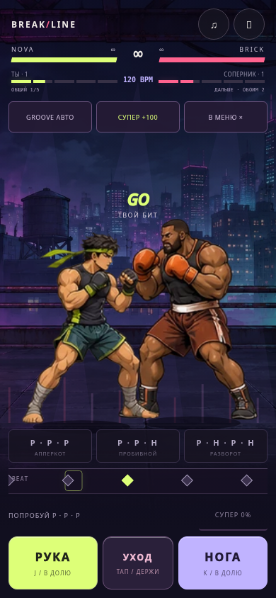
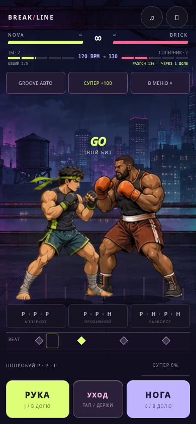
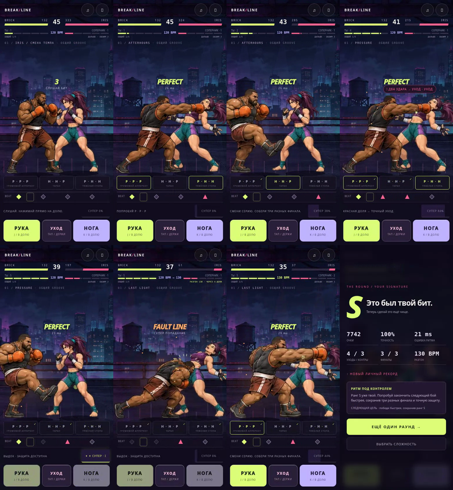
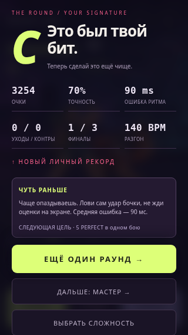
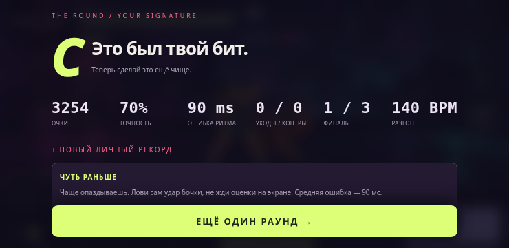
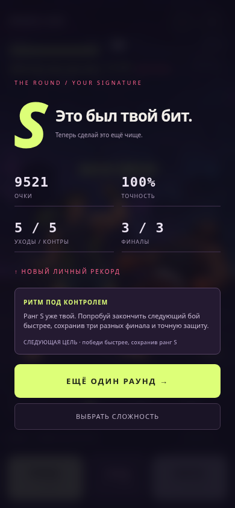
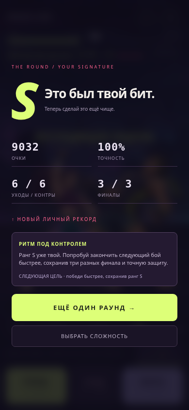
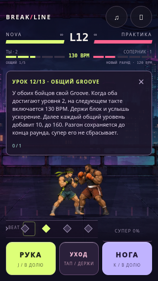
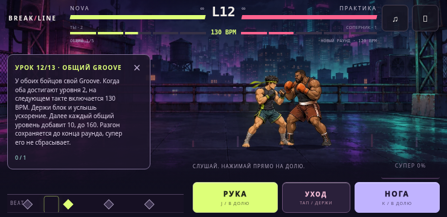
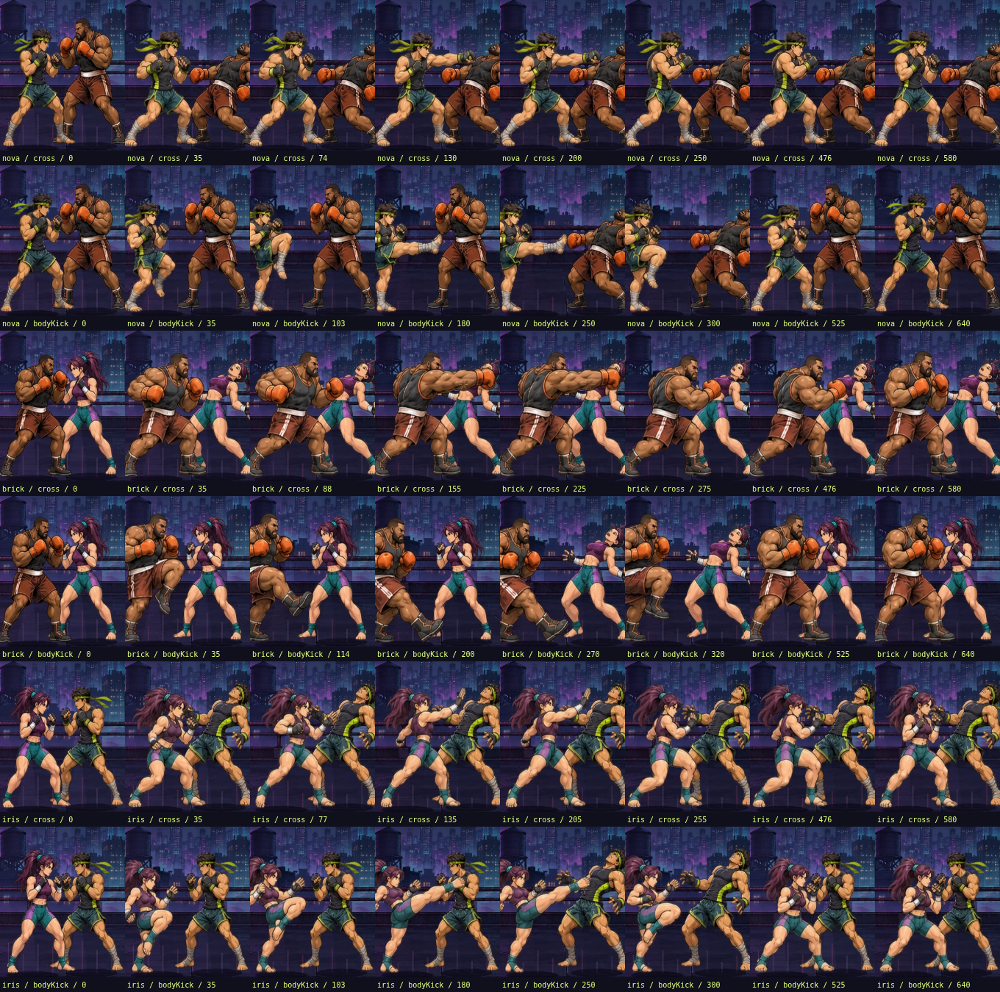

Три завершённых этапа: предупреждения ИИ заранее, понятный разгон двух Groove и полезный разбор точности. Без новых кнопок и дополнительных боевых механик. 3 героя, 9 комбо, 3 супера, 13 уроков, 120–160 BPM.


Полосы заполняются между уровнями. Строка под ними показывает следующий общий порог либо отсчёт до смены BPM. У обоих уровень 2 → 130; 3 → 140; 4 → 150; 5 → 160. По +10 на полном такте, достигнутый темп сохраняется до конца раунда; супер расходует отдельный заряд.

Текущая и две будущие атаки планируются как короткая фраза. Быстрые пары видны на дорожке заранее. Смена HP-фазы меняет новые планы, а не уже объявленные доли. Красная доля остаётся яркой в восстановлении — уход доступен. После длинного зависания старые угрозы отменяются и даётся новая подготовка. Завершение/выход отменяет ещё не запущенные предупреждения.
45 offline-сценариев: 5 BPM × 3 соперника × оценённая задержка 0 / 250 / 490 мс. Оригинальный Web Audio graph с управляемыми музыкальными часами. Музыкальный выход отключён для измерения, чтобы не спутать сигнал угрозы с нотой. Для каждого завершённого контакта проверены и сетка, и слышимый сигнал в полученном аудиобуфере. Это моделирование задержки, не физический Bluetooth/Android.
| BPM | Завершённых угроз | Пропавших сигналов |
|---|---|---|
| 120 | 86 | 0 |
| 130 | 99 | 0 |
| 140 | 105 | 0 |
| 150 | 117 | 0 |
| 160 | 127 | 0 |
Всего 534 контакта с сигналами на нужной доле. Отмена уже созданного lookahead-сигнала проверена по рендеру (пик после отмены 0.0000029), не только по удалению записи. Уже выданный устройству буфер отозвать невозможно.


Этот пример — известная тестовая фикстура с ошибкой 90 мс, чтобы показать совет. Вычисления проверены отдельно принятыми игровыми вводами на всех BPM/сложностях; реальные результаты боёв ниже. Ошибка — среднее абсолютное отклонение принятых атак в реальных миллисекундах. Буфер сохраняет исходное время нажатия. Будущий BPM не выдаётся за достигнутый. Заголовок и реванш доступны без отрицательной прокрутки.

Все 3 финала · супер 2 · уходы 6 · получено ударов 0 · средняя ошибка 17 мс.
Все 3 финала · супер 1 · уходы 4 · получено ударов 0 · средняя ошибка 21 мс.

Все 3 финала · супер 1 · уходы 4 · получено ударов 0 · средняя ошибка 19 мс.
Автоматическая стратегия читает состояние и нажимает UI-кнопки; прямых боевых команд нет. Все три победили с разными финалами и суперударом. Видео Chromium немое, не запись человека или Android. Преимущество осмысленной игры проверяется также против повторяющейся одной кнопки.


13 уроков, свободная практика, 6 мобильных размеров. Подсказки и новые строки HUD проверены по фактическому пересечению видимых областей. Физический Android, акустика телефона и человеческая оценка увлекательности не проверены.
540 кадров / 18 секунд, обычная скорость со звуком и 0,5×. Поставленный показ с заполненным зарядом, без атак соперника; аудио восстановлено тем же движком из событий. Пик микса с суперами 0.877.



По 6 секунд каждого из пяти уровней одной фразы при 120 BPM. Короткая оригинальная D / Phrygian аранжировка, суб/средний бас, сильная четверть. Без внешних сэмплов/голосов. Измерения громкости не заменяют оценку на слух.
13 002 правил, 1 469 угроз, 436 feedback, 11 загрузчика, 128 боя, 65 практики, 38 runtime, 10 576 Groove/transport и 187 аудио/UI-утверждений. Три native-touch победы. Полная игра/main не изменяются.
rules · threats · feedback · loader · browser · practice · runtime · groove · readability · live-bouts · reel
HTML SHA-256: f33fd6369d7b2980f28761f62ec60b8c599d49b478cfb8fca974e8edf04d902c. Все 11 отчётов совпадают с ним. Ветка afterhours-telegraph, код 5557df3. Фактический CI и публикация — PROJECT_STATUS.md.